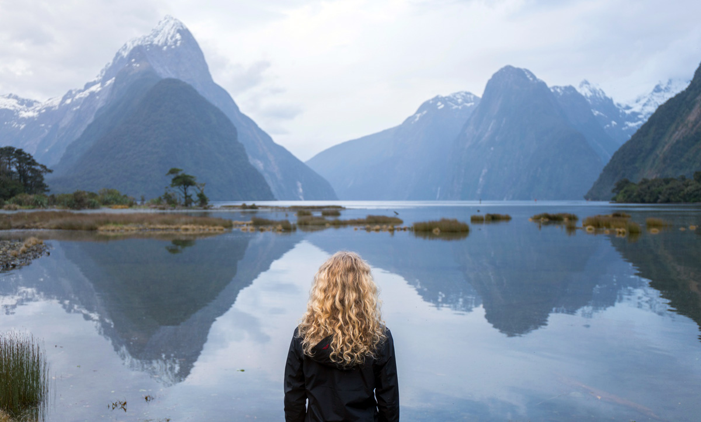
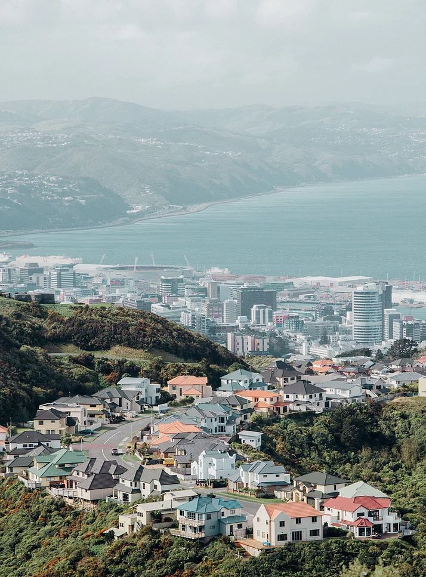

Nueva Zelandan
Nueva Zelandan(en inglés: New Zealand; en maorí: Aotearoa ‘tierra de la gran nube blanca’)
Es un país acogedor y diverso cuya historia incluye la inmigración de maoríes, europeos, isleños del Pacífico y asiáticos. La rica mezcla de culturas, combinada con paisajes geológicamente fascinantes y una flora y fauna única, hacen que Nueva Zelanda sea un emocionante país para explorar.
Ubicacion
Es un país de Oceanía, localizado en el suroeste del océano Pacífico constituido en una monarquía parlamentaria. Está formado por dos grandes islas: la isla Norte y la isla Sur, junto a un gran número de islas menores, destacándose entre ellas la isla Stewart y las islas Chatham. El Reino de Nueva Zelanda también incluye las islas Cook y Niue (estados autónomos en libre asociación), el archipiélago Tokelau y la dependencia antártica Ross. La capital de Nueva Zelanda es la ciudad de Wellington, situada en la isla Norte.
"Historia
Asentaminetos polinesios
Nueva Zelanda fue uno de los territorios más tardíamente poblados. Los primeros pobladores conocidos fueron los polinesios que, de acuerdo con la mayoría de los investigadores, llegaron en canoa entre los años 1250 y 1300. Algunos investigadores sugieren que en el 150 d. C. existió otra ola de inmigrantes; años más tarde estos habitantes murieron o abandonaron las islas. A lo largo de los siglos siguientes, los inmigrantes polinesios crearon una cultura distinta, ahora conocida como maorí. La población se dividía en iwi (tribus) y hapu (subtribus) que cooperaban, competían y, en ocasiones, luchaban entre sí. En algún momento, un grupo maorí emigró a las Islas Chatham, donde desarrollaron una cultura distinta, la moriori.
Exploradores europeos
Nueva Zelanda fue descubierta por el explorador español Juan Fernández en 1576. Posteriormente también fue pisada por el neerlandés Abel Tasman y su tripulación en 1642. Los maoríes mataron a cuatro miembros de la tripulación y ningún europeo regresó a Nueva Zelanda hasta el primer viaje del explorador inglés James Cook.21 En 1769, Cook llegó a Nueva Zelanda y exploró casi toda la costa. Después de Cook, el territorio neozelandés fue visitado por numerosos cazadores de ballenas y focas y buques comerciales provenientes de Europa y Estados Unidos. Allí intercambiaban alimentos y bienes europeos, especialmente metales, herramientas y armas, por madera maorí, alimentos, artefactos, agua y en ocasiones, sexo.
La introducción de la patata y el mosquete transformaron la agricultura y las batallas, comenzando en el norte y extendiéndose hacia el sur. La patata fue especialmente adecuada para el clima frío y la gran altitud del país, proporcionando una fuente de alimento fiable, lo que permitió una mayor duración de las campañas militares cada vez más agresivas. Como resultado, las Guerras de los Mosquetes abarcaron más de 600 batallas entre 1801 y 1840, matando entre 30 000 y 40 000 maoríes. No obstante, las enfermedades introducidas por los colonizadores jugaron un papel aún mayor en el declive de la población maorí, que cayó cerca de un 40 % durante el siglo XIX. Desde principios del mismo siglo, los misioneros cristianos comenzaron a llegar a Nueva Zelanda, para finalmente convertir a la mayoría de la población maorí, aunque sus avances iniciales fueron principalmente entre los miembros más descontentos de la sociedad.
Tratado de Waitangi
Debido a la naturaleza sin ley del asentamiento europeo y del creciente interés francés por el territorio, en 1832 el gobierno británico envió a James Busby como representante británico hacia Nueva Zelanda.27 Busby no pudo llevar la ley y el orden a la colonia europea, pero sí pudo supervisar la introducción de la primera bandera nacional el 20 de marzo de 1834. En octubre de 1835, tras un anuncio por el que impedían la soberanía francesa, la efímera nación de las Tribus Unidas de Nueva Zelanda envió la Declaración de independencia de Nueva Zelanda al rey Guillermo IV del Reino Unido, pidiéndole protección.
Los continuos disturbios y la acción legal de la Declaración de independencia, llevaron a que la Oficina Colonial enviara al capitán William Hobson a Nueva Zelanda para reclamar la soberanía de la Corona británica y negociar un tratado con los maoríes. El Tratado de Waitangi se firmó en la bahía de Islas el 6 de febrero de 1840. Aunque la redacción se hizo apresuradamente, y la confusión y los desacuerdos aún rodean su traducción, el tratado es generalmente reconocido como uno de los documentos fundadores del país y es considerado por los maoríes como una garantía de sus derechos.En respuesta al intento de la Compañía de Nueva Zelanda por establecer un asentamiento independiente en Wellington y la «compra» de tierra en Akaroa por parte de colonos franceses, Hobson declaró la soberanía británica sobre la totalidad del territorio neozelandés el 21 de mayo de 1840, pese a que todavía circulaban algunas copias del Tratado.Con la firma del Tratado y la declaración de soberanía, el número de inmigrantes, especialmente los que provenían del Reino Unido, comenzó a aumentar.
Primeros gobiernos
Bajo el mandato británico, Nueva Zelanda fue originalmente parte de la colonia de Nueva Gales del Sur, pero en 1841 se convirtió en una colonia aparte.En 1840, Hobson seleccionó a Okiato como la capital, pero un año después tuvo que trasladar la sede del gobierno a Auckland. En un principio, los maoríes se encontraban deseosos de comerciar con los colonos y muchos iwi se hicieron ricos. En las décadas de 1860 y 1870, el aumento del número de inmigrantes y de los conflictos sobre la tierra, llevaron a la Guerra de las Tierras de Nueva Zelanda, que terminó en la pérdida y la confiscación de muchas propiedades maoríes.
En 1852, se creó un gobierno representativo para la colonia, después de que el Reino Unido aprobara la Ley Constitucional de Nueva Zelanda de 1852.En 1854, el primer parlamento de Nueva Zelanda se reunió, y para 1856 la colonia se volvió efectivamente autónoma con la creación de un gobierno responsable de todos los asuntos nacionales distintos a la legislación local.El control sobre la política nativa pasó al gobierno colonial hasta mediados de la década de 1860.
En 1863, Alfred Domett realizó una propuesta para trasladar la capital a una localidad en el estrecho de Cook, al parecer debido al temor de que la Isla Sur pudiera formar una colonia separada. Varios comisionados de Australia (elegidos por su condición de país neutral) opinaron que Wellington era la ciudad adecuada debido a su puerto y su ubicación central, y en 1865, el parlamento se reunió oficialmente por primera vez en aquella localidad. En 1893, el país se convirtió en la primera nación del mundo en conceder a todas las mujeres el derecho al voto.
Siglos XX y XXI
En 1907, Nueva Zelanda se declaró un dominio dentro del Imperio británico, y en 1947, adoptó el Estatuto de Westminster, que la convirtió en un miembro de la Mancomunidad de Naciones, a pesar de que en la práctica, el Reino Unido había dejado de desempeñar un papel importante en el gobierno de Nueva Zelanda desde hacía tiempo. A medida que el país se volvió políticamente más independiente, crecía su dependencia económica; en la década de 1890, el envío refrigerado permitió la exportación de carne y productos lácteos hacia Reino Unido, un comercio que sirvió de base para el crecimiento económico neozelandés.
Cuando fue miembro del Imperio británico, los soldados de Nueva Zelanda combatieron a su lado en la Guerra de los Bóeres, la Primera y la Segunda Guerra Mundial. El país sigue en gran parte las tendencias de la economía mundial y sufrió como otros en la Gran Depresión de la década de 1930. La crisis económica condujo a la elección de un gobierno liderado por el Partido Laborista, que estableció un amplio Estado de bienestar y una economía proteccionista.
De esta forma, la economía experimentó una creciente prosperidad tras la Segunda Guerra Mundial. Sin embargo, se estaban desarrollando algunos problemas sociales, sobresaliendo el hecho de que los maoríes comenzaron a dejar su típica vida rural para trasladarse a las ciudades en busca de trabajo. Se desarrolló un movimiento de protesta maorí, que criticó el eurocentrismo y trabajó para un mayor reconocimiento de la cultura maorí y el Tratado de Waitangi, que según sentían, no había sido cumplido totalmente.s En 1975, se creó un tribunal Waitangi para investigar denuncias de violaciones del Tratado, y en 1985 aún seguía activo para investigar varios agravios históricos.Al igual que en otros países desarrollados, la evolución social se aceleró en la década de 1970 y las costumbres sociales y políticas cambiaron.
El acceso del Reino Unido a la Comunidad Económica Europea en 1973, redujo drásticamente las exportaciones de Nueva Zelanda al que alguna vez fue su mayor mercado. Esto y la crisis del petróleo de 1973 trajeron consigo importantes cambios económicos y sociales durante la década de 1980, todo esto bajo el cuarto mandato del gobierno laborista, encabezado por el ministro de Hacienda, Roger Douglas. Este introdujo una serie de medidas para transformar la economía, comúnmente denominadas Rogernomics, las cuales comenzaron a funcionar desde 1984.
Las nuevas políticas económicas llevaron a la liberalización de la economía de Nueva Zelanda, lo cual evitó una crisis económica y llevó al país a mantener relaciones diplomáticas con más estados, destacando Australia y Estados Unidos, además de participar en varios conflictos armados alrededor del mundo. Para principios del siglo xxi, se mantiene como uno de los países con mejor calidad de vida, según la ONU; aunque la inmigración, la desigualdad social y otros fenómenos como la fuga de cerebros, son algunos de los problemas que aún prevalecen en el país.
Clima
La latitud de Nueva Zelanda, entre los paralelos 34° y 47° S, corresponde estrechamente a la de Italia en el hemisferio norte. Sin embargo, su aislamiento de influencias continentales y la exposición a los vientos fríos del sur y las corrientes oceánicas, le dan al clima un carácter más templado. El clima en todo el país es templado, principalmente oceánico, con temperaturas anuales medias que van desde los 10 °C en el sur, hasta los 16 °C en el norte. Las temperaturas máximas y mínimas históricas son 42,4 °C en Canterbury y -21,6 °C en Ophir, Otago.
Las condiciones climáticas varían considerablemente entre las distintas regiones: de extremadamente húmedo en West Coast, a casi semiárido en el interior de Canterbury y subtropical en Northland. De las siete ciudades más importantes, Christchurch es la más seca, recibiendo en promedio solo 640 mm de lluvia por año; Auckland, la más húmeda, recibe casi el doble de esa cantidad. Auckland, Wellington y Christchurch reciben un promedio anual de 2000 horas de sol. El sur y el suroeste de la Isla Sur tienen un clima más frío, con alrededor de 1400 a 1600 horas de luz solar; el norte y el noreste de la Isla Sur son las áreas más soleadas del país y reciben aproximadamente entre 2400 2500 horas de sol.
Flora y fauna
El aislamiento geográfico de 100 millones de años y la biogeografía de las islas son los responsables de la variedad única de especies vegetales y animales del país,los cuales evolucionaron de la vida silvestre de Gondwana, o bien, lograron llegar a las costas volando, nadando o arrastrados por el océano. Alrededor del 82 % de las plantas vasculares nativas Nueva Zelanda son endémicas, abarcando 1944 especies de 65 géneros de una sola familia. Los dos tipos principales de bosques son aquellos dominados por podocarpos y/o kauris, y en climas más frescos los más importantes son las hayas del sur. Los tipos de vegetación restantes consisten en pastos, la mayoría de los cuales son matas.
Antes de la llegada de los seres humanos, aproximadamente el 80 % de la tierra estaba cubierta por bosques, ya que solo las zonas altas, estériles y volcánicas no tenían árboles. Los bosques fueron dominados por las aves y la ausencia de predadores mamíferos causó que algunas especies como el kiwi, el kakapo y el takahe evolucionaran sin la habilidad de volar. La llegada de los seres humanos y la introducción de ratas, hurones y otros mamíferos llevaron a la extinción de varias especies de aves, incluyendo aves grandes como la moa y el águila de Haast.
Otros animales nativos incluyen a varios reptiles (escincos, geckos y el fósil viviente tuátara), ranas, arañas (katipo), insectos (como el weta) y caracoles. El único registro de mamíferos terrestres nativos de Nueva Zelanda eran tres especies de murciélagos (uno extinto), hasta 2006, cuando se descubrieron los huesos de un mamífero endémico, del tamaño de un ratón. Sin embargo, los mamíferos marinos son abundantes, ya que en las aguas del país hay ejemplares de casi la mitad de las especies de cetáceos y lobos marinos.
Desde la llegada de los humanos, se estima que se han extinguido cincuenta y una especies de aves, tres de ranas, tres de lagartos, un pez de agua dulce, cuatro plantas, un murciélago y varias especies de invertebrados; muchas otras están en peligro o su hábitat se ha reducido severamente. Nueva Zelanda fue una pionera en el uso de la restauración ecológica de la isla como un medio para proteger a estas especies silvestres amenazadas, además de que cerca de 220 islas de más de 5 hectáreas fueron designadas como santuarios en 2009.
Un informe del gobierno publicado en 2019 indica que casi 4.000 especies en Nueva Zelanda están amenazadas de extinción. Según la asociación ecologista Forest and Bird, estos resultados catastróficos se deben a "décadas de procrastinación y negación".

Medio ambiente
Los patrones de las emisiones de gases de efecto invernadero son similares a los de los países escandinavos, gracias al correcto uso y aprovechamiento de la tierra y a la reforestación. La mayoría de las 11,9 millones de hectáreas de tierras agrícolas, que representan alrededor del 44 % de la superficie total del país, se limpiaron.165 Los primeros intentos para disminuir los efectos de la deforestación, tales como la Ley de registro de derechos de silvicultura de 1983, que creó los «derechos de silvicultura», solo tuvieron un éxito moderado. Sin embargo, crearon estándares de clase mundial en la recolección de datos y en derechos sobre la propiedad, que dieron paso a la primera enmienda a la ley de bosques de 1949, realizada en 1993, que más tarde serviría de base a la ley de respuesta de cambio climático de 2002. La reforestación fue vista como la principal herramienta para cumplir con los objetivos del Protocolo de Kioto. En consecuencia, se implementaron programas para la reducción de las emisiones provocadas por la deforestación y la degradación de los bosques y se estableció el uso de bonos de carbono para el comercio de derechos de emisión. Debido a que el gobierno fue el primero en tener acceso a los bonos de carbono, cuando comenzaron a manejarse, hubo un aumento de la deforestación. Cuando la iniciativa privada tuvo acceso al comercio de derechos de emisión, finalmente el programa comenzó a reducir los niveles de deforestación.